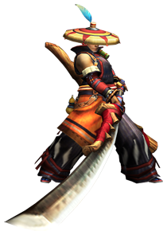
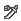
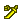
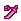
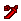

太刀
出自多玩《怪物猎人P3》数据库
 武器：太刀 - 大剑 - 片手剑 - 斩击斧 - 双刀 - 锤子 - 长枪 - 铳枪 - 狩猎笛 - 弓 - 轻弩 - 重弩
武器：太刀 - 大剑 - 片手剑 - 斩击斧 - 双刀 - 锤子 - 长枪 - 铳枪 - 狩猎笛 - 弓 - 轻弩 - 重弩
|  |
|
注：
1，武器名称前的小图标    分别代表稀有度1-7
2，点击武器名称可以查看其详细资料（全武器完工）
3，等级标注为“上位*”的武器虽然等级是上位，但是因为灵鹤石在下位农场就能采集到，所以下位也可以制作
武器派生
古结云派生系
| 武器 | 稀有度 | 攻击 | 附加效果 | 斩味 | 孔 | 等级 |
| ■古结云派生 | ||||||
| 古结云太刀 | 1 | 50 | - | - - - | 下位 | |
| ┗ 结云太刀 | 1 | 70 | - | - - - | 下位 | |
| ┣ 结云太刀改 | 1 | 90 | - | - - - | 下位 | |
| ┃ ┣ 结云大太刀 | 2 | 130 | - | - - - | 下位 | |
| ┃ ┗ 鲜血十字刃 | 2 | 120 | 毒30 | - - - | 下位 | |
| ┃ ┗ 鲜血十字刃改 | 3 | 150 | 毒35 | - - - | 下位 | |
| ┃ ┣ 毒刀甘毒十字 | 6 | 170 | 毒40 | - - - | 上位 | |
| ┃ ┗ 深红十字刃 | 5 | 170 | 会心率 10% 雷26 | - - - | 上位 | |
| ┃ ┗ 失落伊甸 | 6 | 190 | 会心率 15% 雷30 | - - - | 上位 | |
| ┣ 铁刀 | 1 | 80 | - | - - - | 下位 | |
| ┃ ┣ 铁刀【禊】 | 1 | 100 | - | - - - | 下位 | |
| ┃ ┃ ┣ 铁刀【神乐】 | 2 | 140 | - | - - - | 下位 | |
| ┃ ┃ ┃ ┣ 迅影军刀 | 3 | 140 | 会心率 40% | - - - | 下位 | |
| ┃ ┃ ┃ ┃ ┗ 迅影军刀改 | 4 | 160 | 会心率 40% | O - - | 上位* | |
| ┃ ┃ ┃ ┃ ┣ 夜刀【月影】 | 6 | 180 | 会心率 40% | O O - | 上位 | |
| ┃ ┃ ┃ ┃ ┗ 梦魇军刀 | 5 | 180 | - | O - - | 上位 | |
| ┃ ┃ ┃ ┃ ┗ 疾风刀【里月影】 | 6 | 200 | - | O - - | 上位 | |
| ┃ ┃ ┃ ┗ 一虎刀 | 3 | 170 | 会心率 -20% | - - - | 下位 | |
| ┃ ┃ ┃ ┗ 一虎刀【饿刃】 | 4 | 190 | 会心率 -20% | - - - | 上位 | |
| ┃ ┃ ┃ ┗ 轰刀【饿虎】 | 6 | 220 | 会心率 -20% | - - - | 上位 | |
| ┃ ┃ ┗ 电锯 | 2 | 120 | 雷10 | O - - | 下位 | |
| ┃ ┃ ┗ 电锯改 | 3 | 170 | 雷12 | O - - | 下位 | |
| ┃ ┃ ┗ 改良电锯 | 4 | 200 | 雷14 | O - - | 上位 | |
| ┃ ┗ 冻刃 | 2 | 120 | 冰15 | - - - | 下位 | |
| ┃ ┗ 冻刃【冰华】 | 3 | 150 | 冰22 | - - - | 下位 | |
| ┃ ┗ 六花垂冰丸 | 5 | 200 | 冰30 | - - - | 上位 | |
| ┣ 青熊薙 | 1 | 110 | - | - - - | 下位 | |
| ┃ ┣ 青熊薙改 | 2 | 150 | - | - - - | 下位 | |
| ┃ ┃ ┣ 青熊长笔【留跳】 | 4 | 200 | - | - - - | 上位 | |
| ┃ ┃ ┣ 断牙太刀 | 3 | 160 | 防御力+8 龙10 | O - - | 下位 | |
| ┃ ┃ ┃ ┗ 断牙刀【一太刀】 | 7 | 210 | 防御力+16 龙15 | O O - | 上位 | |
| ┃ ┃ ┗ 山刈镰 | 3 | 180 | - | - - - | 下位 | |
| ┃ ┃ ┗ 山刈大镰 | 5 | 200 | - | O - - | 上位 | |
| ┃ ┃ ┗ 山薙巨槌刀 | 6 | 220 | - | O - - | 上位 | |
| ┃ ┗ 水溺刀 | 2 | 130 | 防御力+8 水14 | O - - | 下位 | |
| ┃ ┗ 水溺刀改 | 3 | 170 | 防御力+10 水16 | O O - | 下位 | |
| ┃ ┣ 巨蛇禅杖 | 5 | 190 | 防御力+12 水27 | O O - | 上位 | |
| ┃ ┗ 毒蛇禅杖 | 5 | 190 | 毒18 | O - - | 上位 | |
| ┃ ┗ 碎流毒液禅杖 | 6 | 210 | 毒25 | O - - | 上位 | |
| ┗ 骨刀【犬牙】 | 1 | 90 | - | - - - | 下位 | |
| ┣ 骨刀【豺牙】 | 2 | 120 | - | - - - | 下位 | |
| ┃ ┣ 骨刀无限 | 2 | 110 | 麻痺15 | - - - | 下位 | |
| ┃ ┃ ┣ 骨刀无限改 | 3 | 130 | 麻痺21 | - - - | 下位 | |
| ┃ ┃ ┃ ┣ 骨缚刀【影缝】 | 4 | 150 | 麻痺28 | O - - | 上位 | |
| ┃ ┃ ┃ ┗ 骨刀极限 | 4 | 190 | - | O O - | 上位 | |
| ┃ ┃ ┃ ┗ 骨断刀【影鼬】 | 5 | 210 | - | O O - | 上位 | |
| ┃ ┃ ┗ 炎舞者 | 3 | 140 | 会心率 15% 火25 | - - - | 下位 | |
| ┃ ┃ ┗ 地狱炎舞者 | 6 | 180 | 会心率 25% 火35 | - - - | 上位 | |
| ┃ ┣ 飞龙刀【双火】 | 3 | 160 | 火18 | O - - | 下位 | |
| ┃ ┃ ┗ 飞龙刀【双炎】 | 5 | 170 | 火22 | O - - | 上位 | |
| ┃ ┃ ┗ 飞龙刀【双红莲】 | 6 | 190 | 火24 | O - - | 上位 | |
| ┃ ┃ ┗ 飞龙刀【银】 | 7 | 210 | 火26 | O O - | 上位 | |
| ┃ ┗ 爆锤刀 | 3 | 170 | 防御力+20 | - - - | 下位 | |
| ┃ ┗ 爆锤刀改 | 4 | 200 | 防御力+30 | - - - | 上位 | |
| ┃ ┣ 红莲钢锤刀 | 6 | 230 | 防御力+40 | - - - | 上位 | |
| ┃ ┗ 铬合金刀 | 5 | 210 | 防御力+20 会心率 -20% | - - - | 上位 | |
| ┃ ┗ 铬合金名刀 | 6 | 240 | 防御力+20 会心率 -30% | - - - | 上位 | |
| ┗ 毒狗太刀 | 1 | 100 | 毒18 | O O - | 下位 | |
| ┗ 毒狗太刀改 | 2 | 130 | 毒20 | O O - | 下位 | |
| ┗ 猛毒太刀 | 4 | 180 | 毒24 | O O - | 上位 |
南蛮刀派生系
| 武器 | 稀有度 | 攻击 | 附加效果 | 斩味 | 孔 | 等级 |
| ■南蛮刀派生 | ||||||
| 南蛮刀 | 3 | 160 | 会心率 10% 水18 | - - - | 下位 | |
| ┗ 南蛮刀改 | 4 | 180 | 会心率 15% 水21 | O - - | 上位 | |
| ┗ 南蛮太刀【鲛斩】 | 6 | 200 | 会心率 20% 水25 | O - - | 上位 |
恐暴派生系
| 武器 | 稀有度 | 攻击 | 附加效果 | 斩味 | 孔 | 等级 |
| ■恐暴派生 | ||||||
| 恐暴惩罚牙 | 5 | 180 | 会心率 10% 龙18 | O - - | 上位 | |
| ┗ 灾厄绞杀牙 | 7 | 200 | 会心率 10% 龙23 | O - - | 上位 |
疾风残噬者派生系
| 武器 | 稀有度 | 攻击 | 附加效果 | 斩味 | 孔 | 等级 |
| ■疾风残噬者派生 | ||||||
| 疾风残噬者 | 2 | 130 | - | O - - | 下位 | |
| ┗ 绝音吞噬者 | 3 | 140 | - | O O - | 下位 | |
| ┗ 风语者 | 6 | 190 | 会心率 15% | O O O | 上位 |
太刀鱼刃派生系
| 武器 | 稀有度 | 攻击 | 附加效果 | 斩味 | 孔 | 等级 |
| ■太刀鱼刃派生 | ||||||
| 太刀鱼刃 | 2 | 70 | 水22 | - - - | 下位 | |
| ┗ 太刀鱼刃改 | 3 | 110 | 水30 | - - - | 下位 | |
| ┗ 鲜鱼带刀 | 5 | 160 | 水40 | - - - | 上位 |
真结云派生系
| 武器 | 稀有度 | 攻击 | 附加效果 | 斩味 | 孔 | 等级 |
| ■真结云太刀派生 | ||||||
| 真结云太刀 | 3 | 160 | - | - - - | 下位 | |
| ┗ 真结云太刀改 | 4 | 190 | - | - - - | 上位 | |
| ┗ 灵刀结云·真打 | 6 | 210 | - | - - - | 上位 |
王刀派生系
| 武器 | 稀有度 | 攻击 | 附加效果 | 斩味 | 孔 | 等级 |
| ■王刀派生 | ||||||
| 王刀雷切 | 3 | 160 | 雷20 | O - - | 下位 | |
| ┗ 王牙刀【伏雷】 | 6 | 210 | 雷24 | O - - | 上位 |
凶刀派生系
| 武器 | 稀有度 | 攻击 | 附加效果 | 斩味 | 孔 | 等级 |
| ■凶刀派生 | ||||||
| 凶刀【催花雨】 | 7 | 240 | 会心率 -20% 水12 | - - - | 上位 |
霸刀派生系
| 武器 | 稀有度 | 攻击 | 附加效果 | 斩味 | 孔 | 等级 |
| ■霸刀派生 | ||||||
| 霸刀·末日陨落 | 7 | 250 | 会心率 30% | - - - | 上位 |
崩刀派生系
| 武器 | 稀有度 | 攻击 | 附加效果 | 斩味 | 孔 | 等级 |
| ■崩刀派生 | ||||||
| 崩刀·斩空沧影 | 7 | 250 | 防御力+15 会心率 -20% 冰14 | - - - | 上位 |
漆黑之爪派生系
| 武器 | 稀有度 | 攻击 | 附加效果 | 斩味 | 孔 | 等级 |
| ■漆黑之爪派生 | ||||||
| 漆黑之爪 | 6 | 170 | 龙28 | O - - | 上位 | |
| ┗ 漆黑爪【终焉】 | 7 | 190 | 龙34 | O O - | 上位 |
铁碎牙派生系
| 武器 | 稀有度 | 攻击 | 附加效果 | 斩味 | 孔 | 等级 |
| ■铁碎牙派生 | ||||||
| 铁碎牙 | 3 | 150 | - | O O O | 配信 | |
| ┗ 铁碎牙D | 6 | 200 | - | O O O | 配信 |
琥珀万雷派生系
| 武器 | 稀有度 | 攻击 | 附加效果 | 斩味 | 孔 | 等级 |
| ■琥珀万雷派生 | ||||||
| 琥珀万雷 | 6 | 190 | 雷35 | O O - | 配信 |
霸王剑派生系
| 武器 | 稀有度 | 攻击 | 附加效果 | 斩味 | 孔 | 等级 |
| ■霸王剑派生 | ||||||
| 霸王剑 | 6 | 160 | 龙40 | - - - | 配信 |
太刀攻略心得
图文
| · 【猎人讲武堂】太刀篇Vol.1 认识太刀 | 2010.12.08 |
| · 【猎人讲武堂】太刀篇Vol.2 太刀与全武器比较分析(上) | 2010.12.16 |
| · 【猎人讲武堂】太刀篇Vol.3 太刀与全武器比较分析(下) | 2010.12.22 |
| · 单人无道具太刀破煌黑角的小心得 | 2010.12.26 |
| · 新手写给新手的心得 太刀炎戈龙全破视频 | 2010.12.30 |
| · | >>更多 |
视频
| · 【视频】猫火太刀恐暴龙6分54秒 | 2010.12.20 |
| · 【视频】对空无压力 太刀空砍上位雄火5分14秒 | 2010.12.21 |
| · | >>更多 |
武器：太刀 - 大剑 - 片手剑 - 斩击斧 - 双刀 - 锤子 - 长枪 - 铳枪 - 狩猎笛 - 弓 - 轻弩 - 重弩